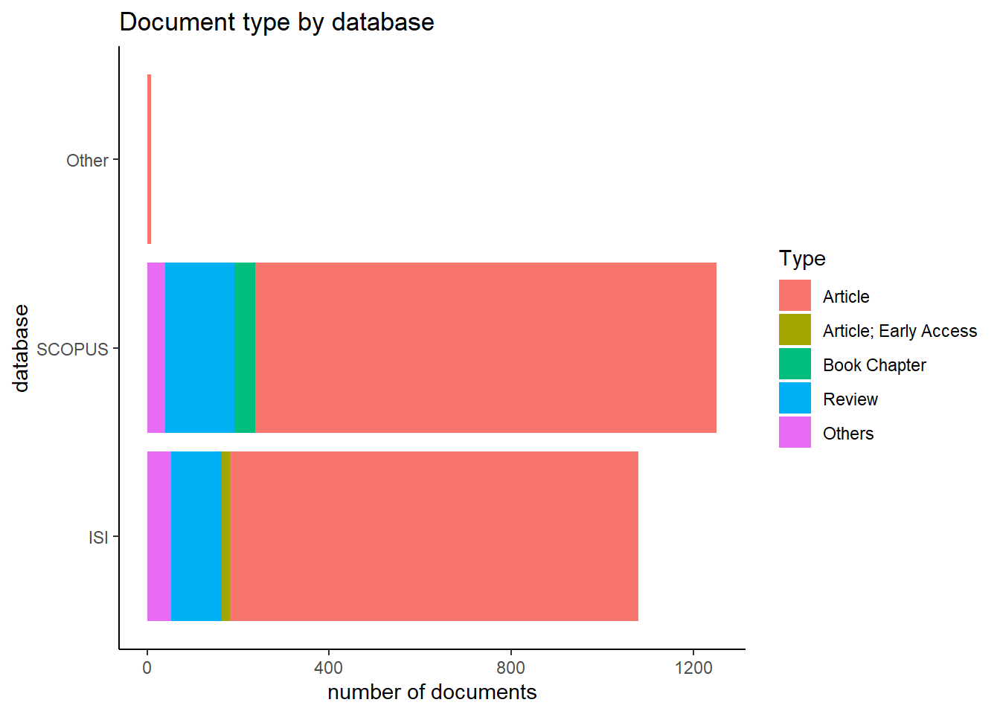
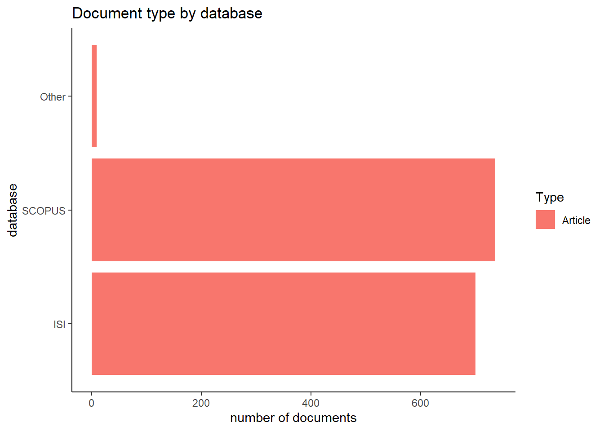
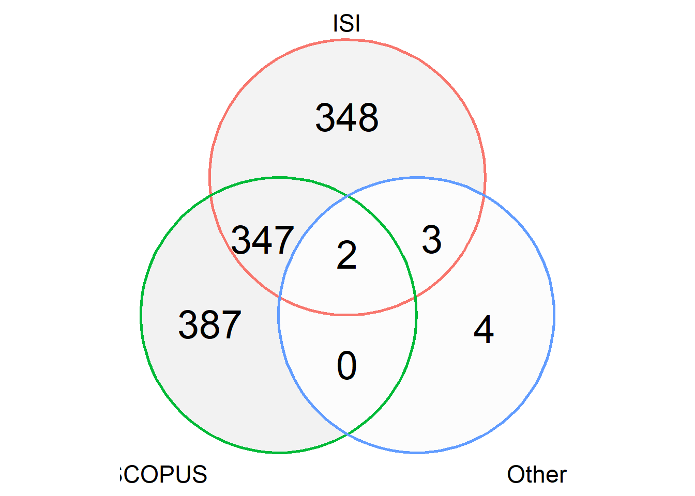
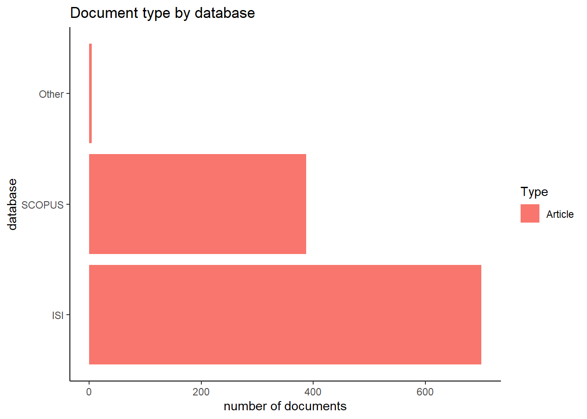
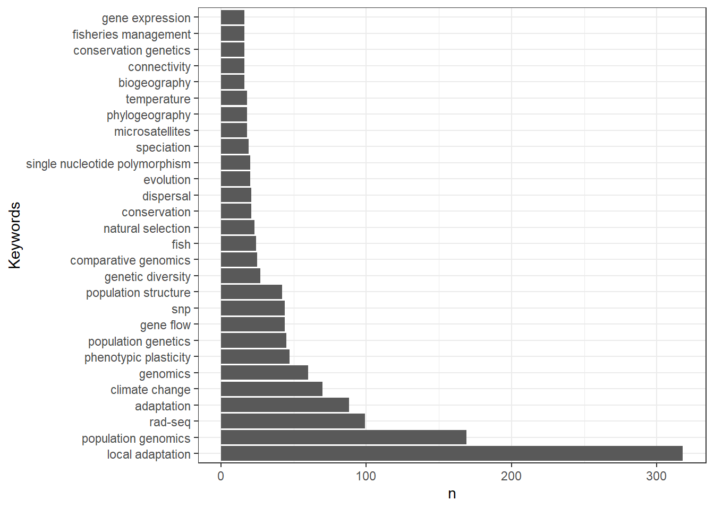
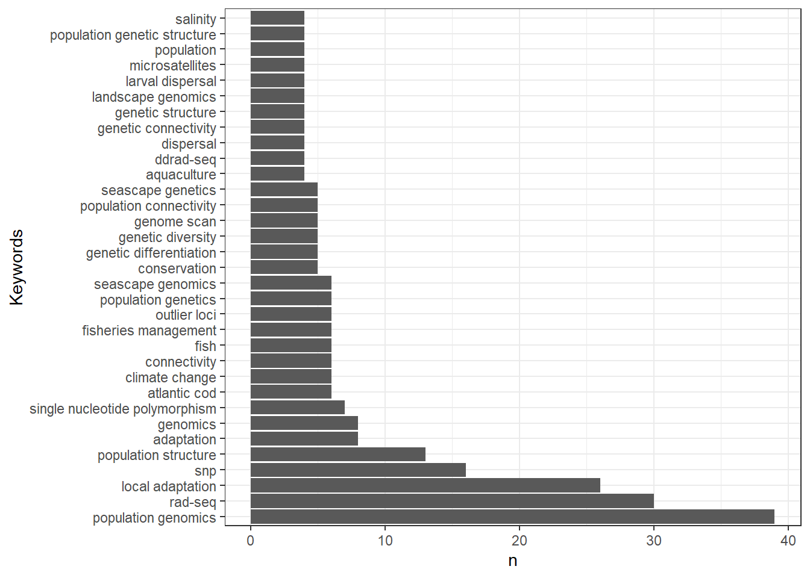

Busqueda bibliográfica
En este documento se describe el proces para obtener la matriz final bibliográfica.
1 Busqueda en los motores de Scopus e ISI Web of Science
1.1 Busqueda del 15/03/2022
La busqueda de bibliografia se enfoco a los motores Scopus e ISI Web of Science. La primera busqueda se realizó el 15 de marzo del 2022 usando las siguientes palabras clave
- Para SCOPUS:
(seascape AND genomics) (title) OR (marine AND genomics) ABS (year) >2009
Esta busqueda dio 667 hits
- Para ISI:
seacape genomics (title) OR (marine AND genomics) (Abstract) from year >2009
Esta busqueda arrojo 603 hits
1.2 Busqueda del 17/03/2022
Para incluir estudios que no se pueden considerar como seascape pero que detectaron evidencias de adaptación local o divergencia genética en el ambiente marino, se amplio la busqueda utilizando los siguientes parámetros:
- Para SCOPUS
| title | seascape genomics | |
| OR Author keywords | population genomics OR local adaptation OR rad-seq | |
| AND All fields | marine | |
| NOT All fields | microbiome OR bacteria | |
| Publication Date | 2010 - 2022 |
Que arrojó 616 documentos
- Para ISI
| title | seascape genomics | |
| OR Author keywords | population genomics OR local adaptation OR rad-seq | |
| AND All fields | marine | |
| NOT All fields | microbiome OR bacteria | |
| Publication Date | 2010 - 2022 |
Esto resultó en 520 documentos
Evidentemente, hay hits repetidos entre las búsquedas realizadas en ambas fechas. En pasos posteriores se eliminan los duplicados
1.3 Estudios adicionales
Además de las busquedas en Scopus e Isi, se incorporaron estudios adicionales los cuales se utilizaron para construir la propuesta del presente estudio. Estos son:
| Title | DOI | Authors | Year | Keywords | database |
|---|---|---|---|---|---|
| Parallel adaptive evolution of Atlantic cod on both sides of the Atlantic Ocean in response to temperature | 10.1098/rspb.2010.0985 | Bradbury, Ian R. | 2010 | atlantic ocean; atlantic cod; local adaptation; natural selection; single nucleotide polymorphysm; temperature | Other |
| Identifying patterns of dispersal, connectivity and selection in the sea scallop, Placopecten magellanicus, using RADseq-derived SNPs | 10.1111/eva.12432 | Van Wyngaarden, Mallory | 2017 | radseq; connectivity; dispersal; outlier loci; population genomics; population structure; sea scallop; single nucleotide polymorphysm | Other |
| RAD sequencing reveals genomewide divergence between independent invasions of the European green crab ( Carcinus maenas ) in the Northwest Atlantic | 10.1002/ece3.2872 | Jeffery, Nicholas W. | 2017 | coi; carcinus maenas; european green crab; population structure; restriction-site-associated dna sequencing | Other |
| A climate-associated multispecies cryptic cline in the northwest Atlantic. | 10.1126/sciadv.aaq0929 | Stanley, Ryan R. E. | 2018 | climate change; atlantic ocean; temperatura; climatic gradient; spatial genetic structure; genetic structure | Other |
| Parallel adaptive evolution of geographically distant herring populations on both sides of the North Atlantic Ocean | 10.1073/pnas.1617728114 | Lamichhaney, Sangeet | 2017 | atlantic herring; genetic adaptation; parallel evolution; reproductive strategies; whole-genome sequencing | Other |
| Seascape genomics reveals adaptive divergence in a connected and commercially important mollusc, the greenlip abalone ( Haliotis laevigata ), along a longitudinal environmental gradient | 10.1111/mec.14526 | Sandoval‐Castillo, Jonathan | 2018 | climate change; ddrad-seq; ecological genomics; landscape genomics; marine protected areas (mpas); population connectivity; southern australia | Other |
| Population genomics reveals a mismatch between management and biological units in green abalone ( Haliotis fulgens ) | 10.7717/peerj.9722 | Mejía-Ruíz, Paulina | 2020 | abalone; ddrad-seq; fisheries management; green abalone; haliotis fulgens; population genomics; snps | Other |
| Neutral and adaptive population structure of pink abalone ( Haliotis corrugata ): fishery management implications | 10.1093/icesjms/fsab098 | Alberto Mares-Mayagoitia, Jorge | 2021 | ddrad; haliotis corrugata; pink abalone; population genomics | Other |
| Population genomic evidence for adaptive differentiation in Baltic Sea three-spined sticklebacks | 10.1186/s12915-015-0130-8 | Guo, Baocheng | 2015 | baltic sea; gasterosteus acucelatus; rad-sequencing; snps; local adaptation; population differentiation | Other |
2 Procesamiento de las bases de datos
2.1 Caracterización general de cada base de datos
Considerando ambas búsquedas bibliográficas se obtuvieron:
- 1079 resultados en ISI Web
- 1252 resultados en Scopus
- 9 otros

2.2 Pre-filtrado de los registros
Se filtraron aquellos registros de tipo Article y se eliminaron aquellos relacionados con Bacteria o microbiome

Tras filtrar estos registro se obtuvieron:
- 700 resultados en ISI Web
- 736 resultados en Scopus
- 9 otros
En total se eliminaron 895 documentos que no son articulos o que estan relacionados con microbioma o bacteria
Venn plot of documents

Quitar duplicados entre todas las bases de datos

Caracterización de las palabras clave en la base de datos

Tras quitar los duplicados entre las tres bases de datos, quedan 1091 documentos los cuales pasaran a la siguiente etapa de revisión.
Esta segunda etapa consiste en la revisión manual de los abstracts, asi como las palabras clave y el titulo para identificar.
2.3 Resultados de la primera ronda de selección
En esta ronda se excluyeron los artículos que tuvieran las caracteristicas:
- Especies no marinas (lagos, ríos, etc.)
- Estudios predominantemente teóricos o de revisión
- Estudios predominantemente experimentales (transplante, laboratorio, etc.)
- Estudios enfocados a toxicología o efectos de degradación del hábitat (metales pesados, contaminantes, etc.)
- Estudios que utilizaron unicamente marcadores mitocondriales
- Estudios enfocados predominantemente al ensamblado de genomas o transcriptomas
Tras esta primera ronda de selección, quedaron 118
2.4 caracterización de las palabras clave de la primera ronda de selección

3 Segunda ronda de selección
Para esta ronda, se revisó manualmente los articulos en completo y se seleccionó a aquellos articulos relevantes para el análisis
Tras esta ronda, se seleccionaron XXX